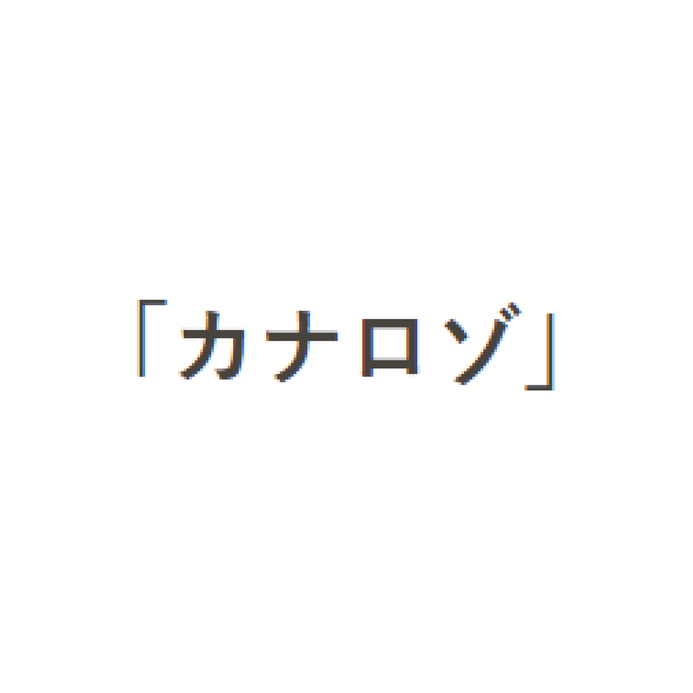
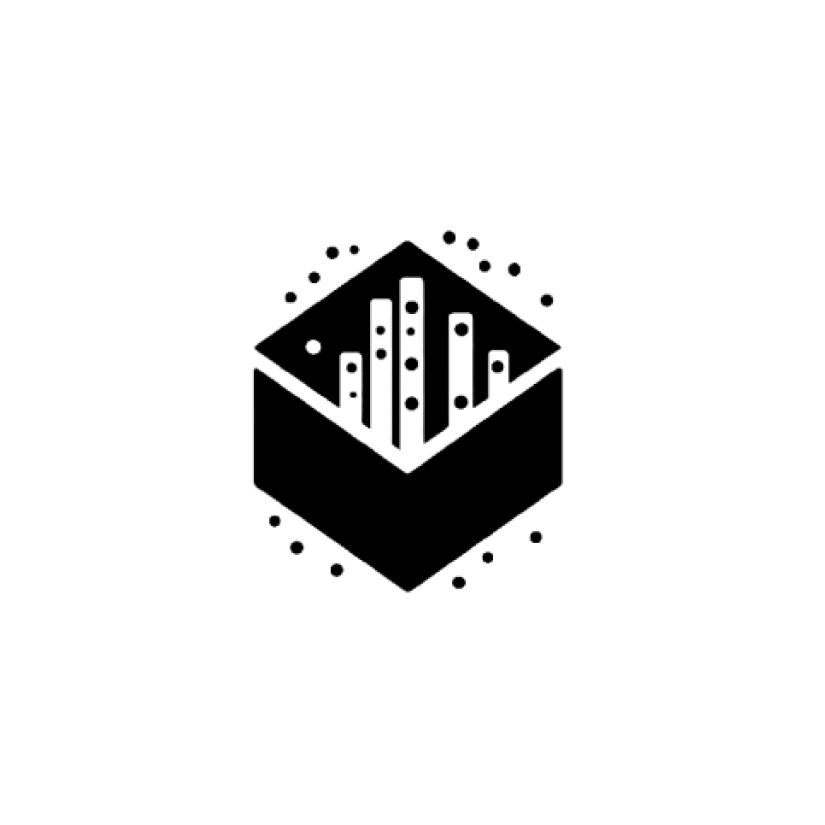
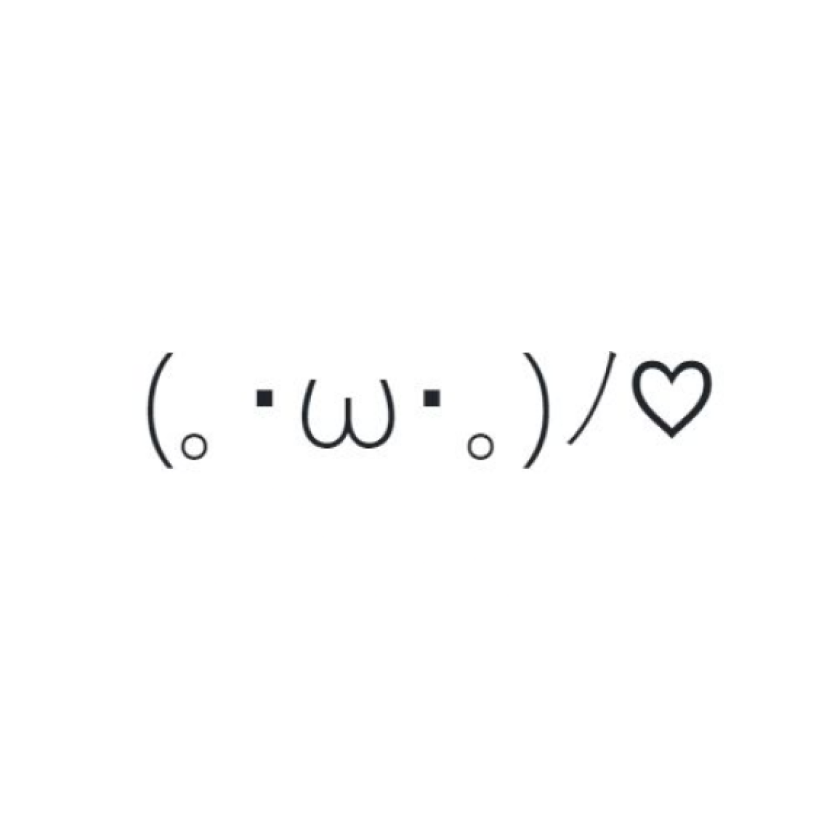
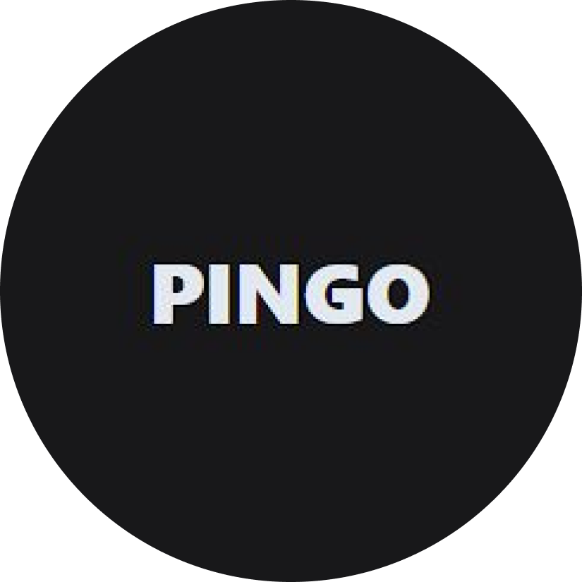

Markers
Uma linguagem de Markup dedicada ao ramo acadêmico feita inteiramente em Haskell.

Kanarozo
Uma aplicação para decorar Hiraganas e Katakanas
BlackConsult
Aplicação Desktop de consultas de dados bancários em tempo real para empresas de crédito e empréstimo.
BlackFilters
Aplicação Desktop para inserção, extração e filtragem em massa de planilhas e dados.

SistemaConsult
Um serviço de consultas de dados bancários utilizando de sistemas de automação.

iNout
Aplicação Mobile para simples anotações de textos.

Kaosearch
Um serviço de pesquisa de Kaomojis usando de termos e tags em comum.

Pingo
Um pequeno jogo de Bingo no qual as entradas são aleatorizadas via APIs.